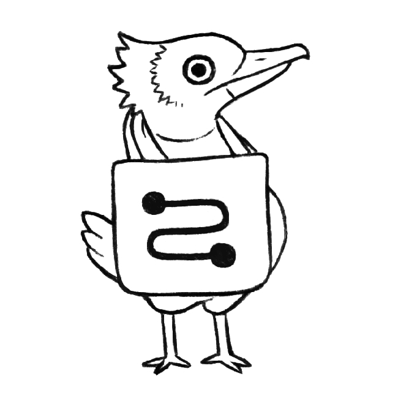

About
About Projects
Projects Books
Books Games
Games Stories
Stories Store
Store Notes
Notes How-to
How-toTote is a rewriting playground. Riffing on Le Guin's Carrier Bag Theory of Fiction, Tote presents a primordial vision of computation in which programs are written as a list of changes in the content of a bag, and programming can be done entirely without the need for textual representations.
Try ToteTote was released on January 14th 2025. I made some illustrations for the docs, featured on this page.
Programming is done by dragging things from the Panel(left) into the Rules(middle) or Bag(right). Step through the evaluation by pressing the button with the squiggly symbol(bottom right) to rewrite the symbols in the Bag.
Click on the symbols in the Panel(left) to open the Symbol Editor with which you can draw new symbols, save/load the ICN graphics, lock/unlock the dragging of the symbol in the bag, activate continuous/step mode for when the symbol is clicked on.
Clicking inside the bag during symbol editing gives that symbol an anchor position, when that symbol will be created as the result of a rule, it will spawn at that location.
To learn more, see the examples from Pocket Rewriting, and Fractran.